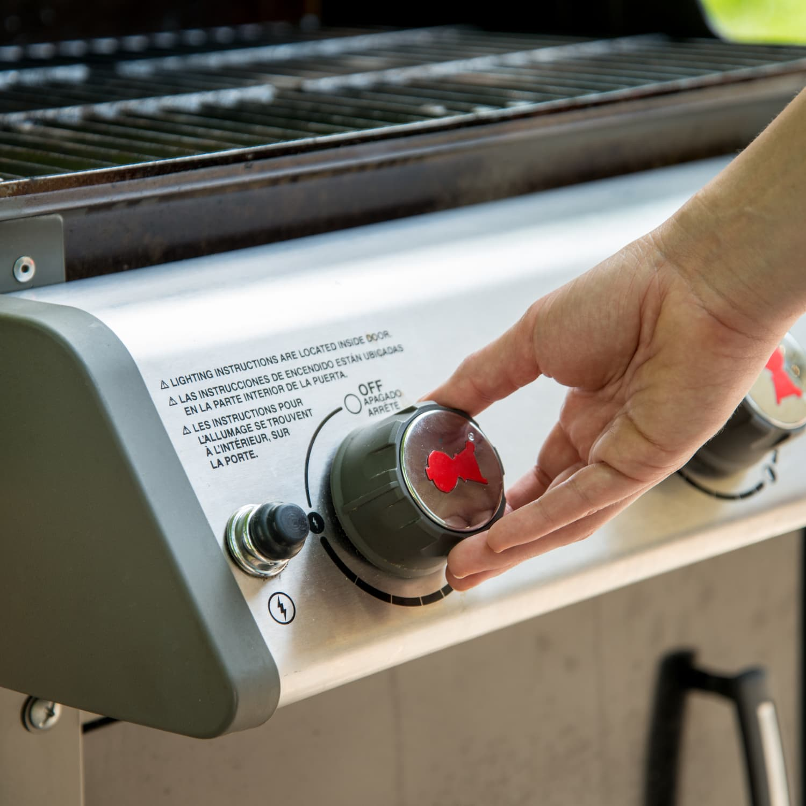
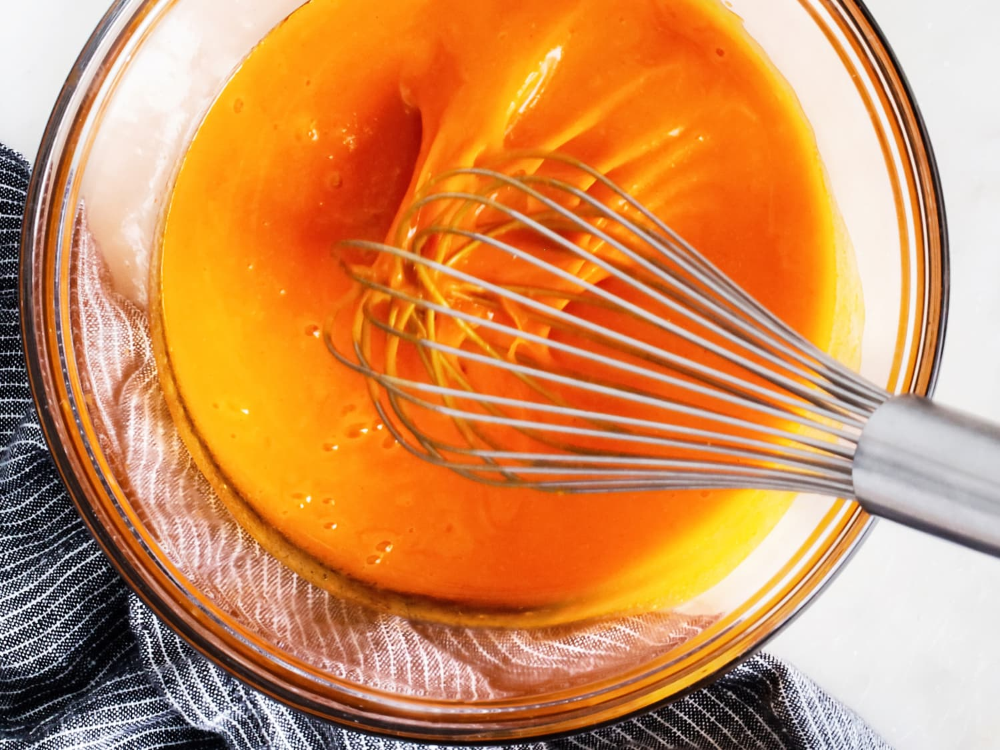
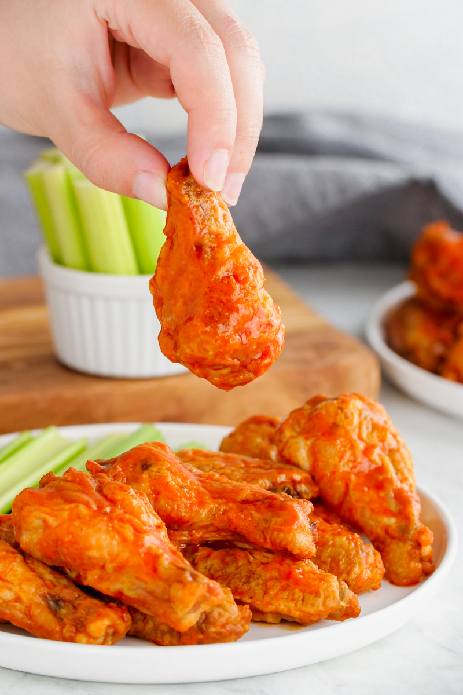

Description
These Grilled Buffalo Wings are sure to be a hit during your next party! A crowd favorite, with simple and easy ingredients but with a great flavor!
Ingredients
- 3 pounds chicken wings, seperated at joints, tips discarded
- 1 cup Louisiana-style hot sauce
- 1 (12 fluid ounce) can or bottle cola-flavored carbonated beverage
- 1/4 teaspoon cayenne pepper, or to taste
- 1/4 teaspoon ground black peper, or to taste
- 1 tablespoon soy sauce
Steps
- Preheat a grill to medium heat
- Mix hot sauce, cola, cayenne pepper, black pepper and soy sauce together in a large pot; add wings to the sauce. Place the pot on one side of the preheated grill; bring to a simmer.
- Use tongs to transfer wings out of sauce and place on the preheated grill; cook until lightly charred on both sides, about 8 to 10 minutes, then return wings to the sauce to continue cooking. Repeat this process until chicken is cooked and pulls easily off of the bone, and the sauce is hot and thickened, about 50 minutes. You can serve them as sloppy-style wings, or serve right off the grill for dryer wings and dip!
- Enjoy!